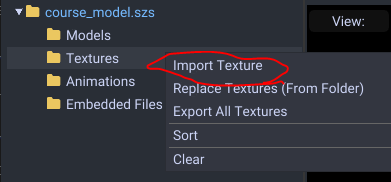
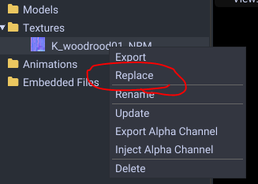
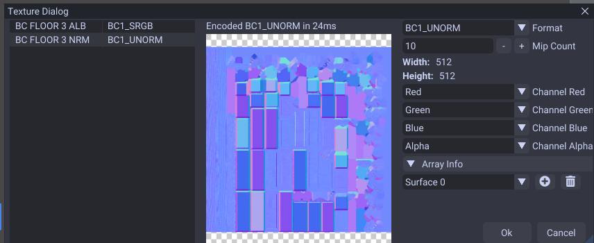
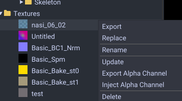

Textures
Adding/Replacing
To start adding your own textures you want to right click the texture folder and click Import Texture

If you want to change an existing texture, right click and hit Replace.

Select your image file. It can be .png, .dds, .jpg, .bmp, and .bftex (raw) If you are importing you can select multiple files at a time. Light maps optionally can use .exr HDR encoding.
Now a window will appear.

Set the formats as such:
- Diffuse Map : BC1 SRGB or BC3 SRGB for translucent
- Normal Map : BC1 Unorm
- Specular Map : BC4 Unorm (unless you want color which requires BC3 Unorm)
- Light Map - BC3 Unorm
- Shadow Map - BC1 Unorm
If you have a shadow or light map you should make the mip count 1.

When that is selected you can click Ok.
Now your texture is added. If you need to assign the texture refer to the material guide.
Right Click Menu

- Export : Exports the texture to .png, .dds, .jpg, .tiff, or .bftex (raw)
- Replace : Replaces the texture with .png, .dds, .jpg, .tiff, or .bftex (raw)
- Rename : Changes the texture name.
- Update : Update the current replaced texture with the latest file.
- Delete : Removes the texture.